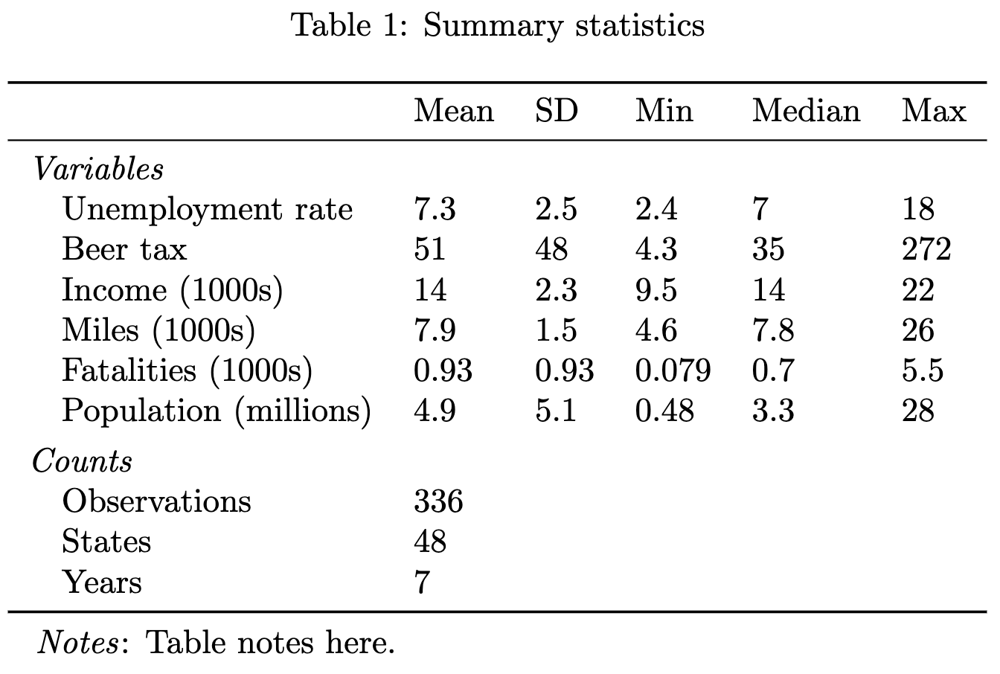

Patrick Baylis
Home
Research
CV
Teaching
Blog
Posts
Categories
All
(33)
R
(3)
analysis
(1)
coding
(3)
data
(4)
econometrics
(5)
food
(1)
latex
(1)
productivity
(3)
programming
(10)
teaching
(1)
writing
(2)
Response functions with fixed effects
R
econometrics
Using fixest + marginaleffects to plot response functions with fixed effects
Sep 25, 2025
Patrick Baylis
New dataset: Daily average online sentiment by county
data
Releasing a dataset used in several of my papers
Feb 22, 2025
Patrick Baylis

Making LaTeX tables that look nice (2024 update)
R
latex
I haven’t been very good at updating the blog recently,
1
but it feels like as good a time as any for an update on how to make basic but nice-looking LaTeX tables with…
Apr 6, 2024
Patrick Baylis
Welcome to Quarto
writing
coding
It’s Quarto’s world, we’re all just living in it
Dec 11, 2022
Patrick Baylis
A catalog of datasets for environmental economics
data
With the help of Keith Kirchner, one of our all-star graduate students, I’ve started to put together a catalog of datasets relevant to environmental economics research. I…
May 13, 2022
Patrick Baylis
Productivity and the work habits that work (for me)
productivity
(Original post April 10, 2021, updated February 9, 2022. This blog post is discussed on the excellent Hidden Curriculum podcast with Alex Hollingsworth and Sebastian…
Feb 9, 2022
Pop-weighted averages from rasters
programming
Updated February 10, 2022 to incorporate
prism
package.
Aug 15, 2021
Making better tables
analysis
I now have an updated version of this post. You can find it here.
May 30, 2021
Partial predictions
coding
In climate economics and in other settings, we often would like to estimate a
response function
, or the outcome as a function of some covariate, i.e.,
\(y = f(T)\)
. Most of…
Jan 22, 2021
How I’m remote teaching a big class this fall
teaching
I start teaching remotely in two weeks. Helping 140 students spread across the world (so many timezones!) learn about environmental economics is a daunting task.…
Aug 20, 2020
Patrick Baylis
Overlaying a raster and shapefile
R
I’m often overlaying rasters with shapefiles in order to get, for example, the average weather for Indonesia. I’ve found that it’s immensely important that I
map my data
when…
Jul 3, 2020
Patrick Baylis
Notes on sourdough
food
And now for something completely different… sourdough! I first began baking as an escape from grad school ennui. Since then, and especially in last couple months, it’s been…
Apr 12, 2020
Patrick Baylis
How to plot a specification curve
programming
Like many researchers, I often want to plot a range of coefficient estimates to figure out if the results I’m finding are robust to other sensible specification and…
Feb 28, 2020
Patrick Baylis
Scoring texts for the presence of phrases
programming
In my text analysis work, I frequently score texts for the presence or absence of various ``keywords’’. Because I work with some large corpora (collections of texts), for…
Dec 5, 2019
Patrick Baylis
Generating regression tables in R
I often need to document the statistical results I estimate in table format. I have tried many, many things over the years, and none of my solutions are perfect, including…
Nov 25, 2019
FD vs FE and new tidyr commands
econometrics
For two periods, first differences is numerically equivalent to a fixed effect model. The following code reproduces that result, using the (new)
pivot_longer
and
pivot_wider
…
Nov 5, 2019
Patrick Baylis
Making regressions purrr
programming
I often need to run multiple sets of regressions on the same or similar datasets. This is usually for some set of robustness checks, either to help me better understand the…
Jun 11, 2019
Patrick Baylis
A list of gists
programming
I’ve been saving a lot of code snippets here. To keep things organized, I’m going to keep them in a single page instead.
May 16, 2019
Patrick Baylis
Things I forget: install git lfs and initialize in repo
programming
git lfs
is great for including (fairly) large files in git repositories. Since the entire history of files is saved, it prevents large files from blowing up the repo. I’m…
Nov 4, 2018
Automatically size beamer images and tables
writing
“Democracy is the worst form of government, except for all the others” - Winston Churchill (although apparently he was quoting someone else)
Oct 11, 2018
Things I forget: readr shortcuts
programming
readr
is a the swiss-army knife of data ingestion: it’s my tool of choice for reading in text data in R, not least because I’m spending more time using the tidyverse these…
Oct 8, 2018
Debugging in R, RStudio
programming
Debugging can be a challenge in RStudio. One of my main frustrations is that once you execute the Run command on a selection of code (i.e., running it in interactive mode)…
Sep 11, 2018
Patrick Baylis
Things I forget: tmux for headless SSH use
productivity
How to run something through SSH that takes a long time without having to stay logged in:
Sep 11, 2018
Nominatim for offline geocoding
I needed to geocode around 20 million addresses. Normally I could just pay geocod.io to do this for me, but because of the contractual confidentiality requirements around…
Aug 28, 2018
Climate Projection Sandbox
econometrics
Many climate-society papers project the impacts of predicted climate change on the outcome of interest (guilty!). This post include code to conduct this kind of “climate…
May 20, 2018
Patrick Baylis
Linear combinations of coefficients in R
coding
I still use a version of this occasionally, but the various marginal effects package – specifically `marignaleffects’ seem to replicate most of the functionality I need…
Apr 12, 2018
R performance tests
programming
Update (July 2020): These tests are quite dated at this point, YMMV. Software changes quickly!
Feb 3, 2017
Patrick Baylis
Estimating high dimensional fixed effects models in Julia
programming
Update (December 2022): Julia has changed quite a bit since I originally wrote this.
FixedEffectsModels.jl
still existed when I last checked in 2018, but it often gave me…
Jan 19, 2017
Patrick Baylis
Yesterday’s Maximum Temperature is… Today’s Maximum Temperature?
data
This was also posted on G-Feed.
May 18, 2016
Patrick Baylis
How to save a stream of tweets
data
Update (July 2020): I no longer use this process, since now I save the raw tweets as JSONs and convert to CSVs for processing later. This takes up more hard drive space, but…
May 18, 2016
Patrick Baylis
Fast Zonal Statistics
econometrics
Update (July 2020): There are now other R options that are faster. For example
exactextractr
,
velox
, and
fasterize
, among many others. I no longer resort to Python for these…
Mar 17, 2016
Patrick Baylis
Conley standard errors and high dimensional fixed effects
econometrics
Update (April 2022): I’ve left this post up for posterity, but, full disclosure, the “solution” I offer below the break isn’t much of a solution at all. These days, when I…
Oct 12, 2015
Patrick Baylis
Productivity and organization notes
productivity
December 2022: I’ve left this post up for posterity, but I habitually reinvent my work process every six months or soo, so at this point these notes are about well out of…
Sep 8, 2015
Patrick Baylis
No matching items